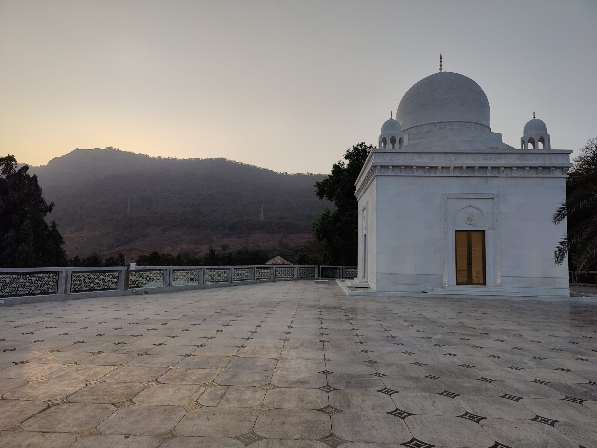

His Holiness Syedna Taher Fakhruddin Saheb has opened the doors of Mazaar-e-Qutbi to visitors and the public. Every Sunday, Dargah Tours will take place starting at 5:00pm onwards. Guided tours are available in English, Hindi and Marathi and will take 30 minutes.
His Holiness Syedna Taher Fakhruddin wishes for the guided tours of Raudat-un-Noor to foster communal harmony and promote inter-cultural dialogue. These tours will give visitors an overview of the history and significance of the space.
Monuments of reverence spanning from Fatimid Egypt, to the Saifee Masjid in Bhendi Bazaar, have inspired its architectural essence. Chandeliers featuring Czech crystal adorn the ceilings, and its largest carpet is handcrafted and brought from the city of Mirzapur in Uttar Pradesh. Makrana Marble is featured throughout the Complex. This and more will be presented during the tour.
Most importantly an insight into how the memory of Syedna Khuzaima Qutbuddin RA - who was goodness personified - was a guiding inspiration.

Syedna Fakhruddin Saheb is the 54th Dai al-Mutlaq of the Dawoodi Bohra Community and his vision for harmony and coexistence is a continuation of the philosophy of his predecessors - fundamentally that there is a universal and divine origin to all sects and beliefs. His grandfather, Syedna Taher Saifuddin Saheb, the 51st Dai al-Mutlaq presented a model of spiritual Islam that seeks to shun all forms and facets of disharmony and enmity among members of humanity across the globe. His revered father, Syedna Khuzaima Qutbuddin Saheb founded the Taqreeb Interfaith Initiative.
Mazaar-e-Qutbi Complex Visiting Guidelines
Clothing
Entry to Mazaar-e-Qutbi is permitted only to appropriately dressed visitors. Please note, shoes are not permitted inside the premises. All rain related clothing should also be removed before entering.
For gentlemen: Sleeveless and/or low-cut garments and shorts above the knee are not permitted.
For women: Sleeveless and/or low-cut garments are not permitted. Full length dresses are required. Appropriate head coverings are required, or will be provided on-site.
The requirement of decorum extends also to any visible personal objects as well as similarly visible distinctive personal signs (such as, for example, tattoos) that may be offensive to any religious sentiment or to common decency.
Wheelchairs and baby strollers
Wheelchair facilities are available upon request. Visitors are requested to leave baby strollers/prams at the entrance.
Security checks
Visitors are prohibited from bringing knives, scissors, laser pointers, any weapons, metal tools of various types, and other items as may be determined by the on-site security team into Mazaar-e-Qutbi. Such items can be stored in our cloakroom and will be returned to visitors after their visit. Firearms and hazardous materials may not be left in the cloakroom.
It is forbidden to bring any type of firearm and/or dangerous material into the Mazaar-e-Qutbi. In addition, entry is not permitted to armed visitors (including those holding a valid license).
Umbrellas, sticks, stands and video cameras
Umbrellas, sticks (apart from those used for walking), tripods and stands for photography, video cameras, banners and signs of any type must all be left in the cloakroom.
Food and drink
It is not permitted to bring any food and drink into Mazaar-e-Qutbi. Consumption of food and drink within the premises is limited to that which is provided on site, and for consumption in designated areas only.
Pets and guide dogs
Pets of any kind, including guide dogs are strictly prohibited entry into Mazaar-e-Qutbi. Appropriate assistance will be made available to facilitate visits for blind or partially-sighted guests.
Mobile phones
Use of mobile phones within the Raudat-un-Noor mausoleum or Iwan-e-Qutbi prayer hall is strictly prohibited. Visitors may use their mobile phones in other areas of Mazaar-e-Qutbi.
Photography
It is permitted to take photographs, for personal and domestic use only, within the Mazaar-e-Qutbi Complex. Photography for commercial or any other purpose is prohibited without the prior management approval.
The use of tripods, stands, drones and/or professional equipment is not allowed. The use of “selfie sticks” is forbidden.
Smoking
The entire Mazaar-e-Qutbi Complex is a non-smoking zone. Any form of smoking, including (but not limited to) the use of electronic cigarettes, is forbidden.